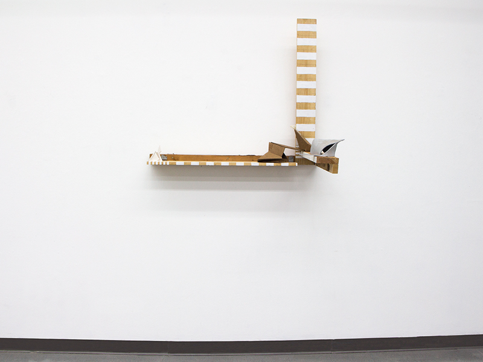
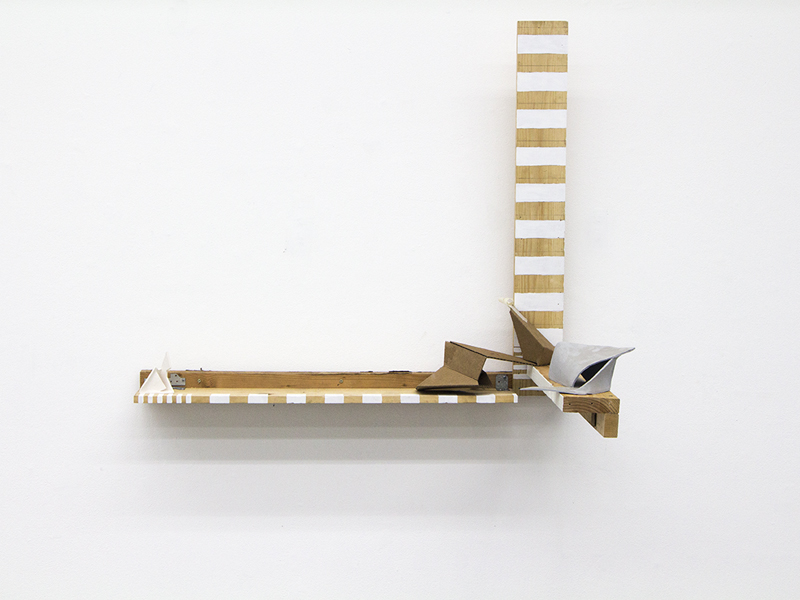
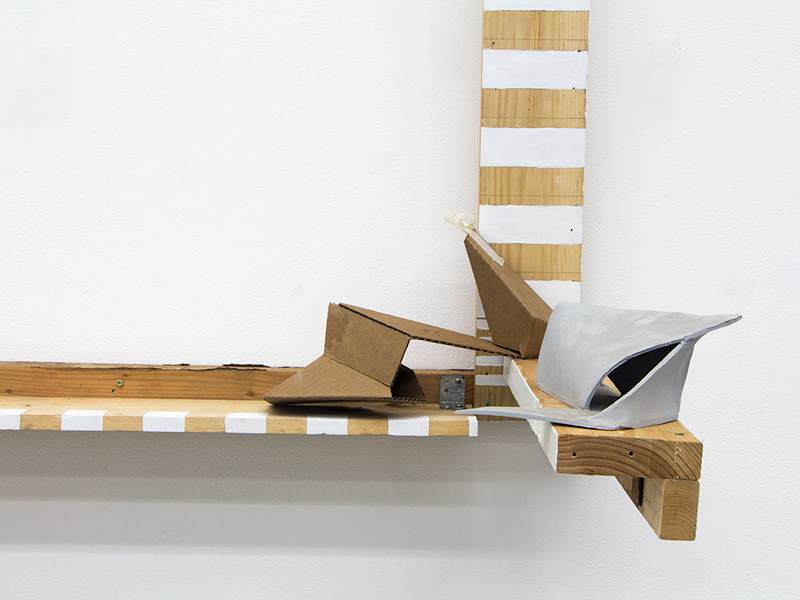
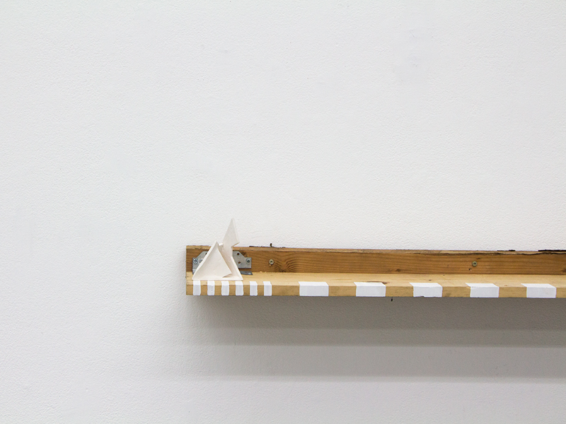

<section class="paintingWork-Sections m-scene"><div class="flex flex--center scene_element scene_element--fadein"><div class="col-1b"><h4>Painting</h4><a href="sWork-Intertextyouability.html" class="wp-nextBtn">></a></div><div class="col-1c"><h2>Transfiguration</h2><p class="workDate smaller">2016</p></div><div class="col-description"><p class="smaller">36" x 38" x 24"</p><p class="smaller">Acrylic Paint, Cardboard, Ceramic, Unfired Ceramic Greenware,<br/>Dirt, Graphite, Tape, Wood From Past Projects</p><a href="pWork-Disclosures.html" class="portfolio-nextBtn">></a></div><div id="center2" class="paintingGallery pushUp"><ul class="rslides"><li></li><li></li><li></li><li></li></ul></div></div></section>